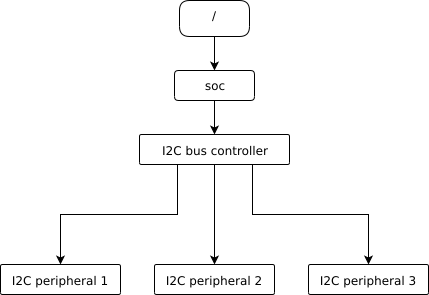
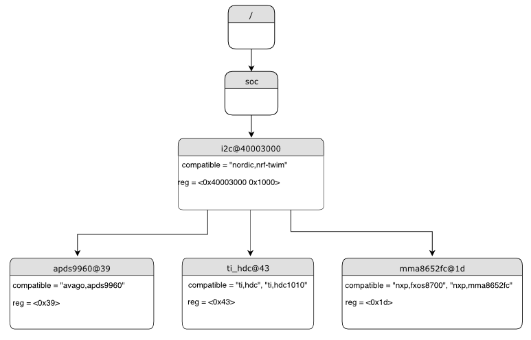

Syntax and structure
As the name indicates, a devicetree is a tree. The human-readable text format for this tree is called DTS (for devicetree source), and is defined in the Devicetree specification.
This page’s purpose is to introduce devicetree in a more gradual way than the specification. However, you may still need to refer to the specification to understand some detailed cases.
Example
Here is an example DTS file:
/dts-v1/;
/ {
a-node {
subnode_nodelabel: a-sub-node {
foo = <3>;
};
};
};
The /dts-v1/; line means the file’s contents are in version 1 of the DTS
syntax, which has replaced a now-obsolete “version 0”.
Nodes
Like any tree data structure, a devicetree has a hierarchy of nodes. The above tree has three nodes:
A root node:
/A node named
a-node, which is a child of the root nodeA node named
a-sub-node, which is a child ofa-node
Nodes can be assigned node labels, which are unique shorthands that refer to
the labeled node. Above, a-sub-node has the node label
subnode_nodelabel. A node can have zero, one, or multiple node labels. You
can use node labels to refer to the node elsewhere in the devicetree.
Devicetree nodes have paths identifying their locations in the tree. Like
Unix file system paths, devicetree paths are strings separated by slashes
(/), and the root node’s path is a single slash: /. Otherwise, each
node’s path is formed by concatenating the node’s ancestors’ names with the
node’s own name, separated by slashes. For example, the full path to
a-sub-node is /a-node/a-sub-node.
Properties
Devicetree nodes can also have properties. Properties are name/value pairs. Property values can be any sequence of bytes. In some cases, the values are an array of what are called cells. A cell is just a 32-bit unsigned integer.
Node a-sub-node has a property named foo, whose value is a cell with
value 3. The size and type of foo‘s value are implied by the enclosing
angle brackets (< and >) in the DTS.
See Writing property values below for more example property values.
Devicetrees reflect hardware
In practice, devicetree nodes usually correspond to some hardware, and the node hierarchy reflects the hardware’s physical layout. For example, let’s consider a board with three I2C peripherals connected to an I2C bus controller on an SoC, like this:

Nodes corresponding to the I2C bus controller and each I2C peripheral would be present in the devicetree. Reflecting the hardware layout, the I2C peripheral nodes would be children of the bus controller node. Similar conventions exist for representing other types of hardware.
The DTS would look something like this:
/dts-v1/;
/ {
soc {
i2c-bus-controller {
i2c-peripheral-1 {
};
i2c-peripheral-2 {
};
i2c-peripheral-3 {
};
};
};
};
Properties in practice
In practice, properties usually describe or configure the hardware the node represents. For example, an I2C peripheral’s node has a property whose value is the peripheral’s address on the bus.
Here’s a tree representing the same example, but with real-world node names and properties you might see when working with I2C devices.

I2C devicetree example with real-world names and properties. Node names are at the top of each node with a gray background. Properties are shown as “name=value” lines.
This is the corresponding DTS:
/dts-v1/;
/ {
soc {
i2c@40003000 {
compatible = "nordic,nrf-twim";
reg = <0x40003000 0x1000>;
apds9960@39 {
compatible = "avago,apds9960";
reg = <0x39>;
};
ti_hdc@43 {
compatible = "ti,hdc", "ti,hdc1010";
reg = <0x43>;
};
mma8652fc@1d {
compatible = "nxp,fxos8700", "nxp,mma8652fc";
reg = <0x1d>;
};
};
};
};
Unit addresses
In addition to showing more real-world names and properties, the above example
introduces a new devicetree concept: unit addresses. Unit addresses are the
parts of node names after an “at” sign (@), like 40003000 in
i2c@40003000, or 39 in apds9960@39. Unit addresses are optional:
the soc node does not have one.
In devicetree, unit addresses give a node’s address in the address space of its parent node. Here are some example unit addresses for different types of hardware.
- Memory-mapped peripherals
The peripheral’s register map base address. For example, the node named
i2c@40003000represents an I2C controller whose register map base address is 0x40003000.- I2C peripherals
The peripheral’s address on the I2C bus. For example, the child node
apds9960@39of the I2C controller in the previous section has I2C address 0x39.- SPI peripherals
An index representing the peripheral’s chip select line number. (If there is no chip select line, 0 is used.)
- Memory
The physical start address. For example, a node named
memory@2000000represents RAM starting at physical address 0x2000000.- Memory-mapped flash
Like RAM, the physical start address. For example, a node named
flash@8000000represents a flash device whose physical start address is 0x8000000.- Fixed flash partitions
This applies when the devicetree is used to store a flash partition table. The unit address is the partition’s start offset within the flash memory. For example, take this flash device and its partitions:
flash@8000000 { /* ... */ partitions { partition@0 { /* ... */ }; partition@20000 { /* ... */ }; /* ... */ }; };
The node named
partition@0has offset 0 from the start of its flash device, so its base address is 0x8000000. Similarly, the base address of the node namedpartition@20000is 0x8020000.
Important properties
The devicetree specification defines several standard properties. Some of the most important ones are:
- compatible
The name of the hardware device the node represents.
The recommended format is
"vendor,device", like"avago,apds9960", or a sequence of these, like"ti,hdc", "ti,hdc1010". Thevendorpart is an abbreviated name of the vendor. The file dts/bindings/vendor-prefixes.txt contains a list of commonly acceptedvendornames. Thedevicepart is usually taken from the datasheet.It is also sometimes a value like
gpio-keys,mmio-sram, orfixed-clockwhen the hardware’s behavior is generic.The build system uses the compatible property to find the right bindings for the node. Device drivers use
devicetree.hto find nodes with relevant compatibles, in order to determine the available hardware to manage.The
compatibleproperty can have multiple values. Additional values are useful when the device is a specific instance of a more general family, to allow the system to match from most- to least-specific device drivers.Within Zephyr’s bindings syntax, this property has type
string-array.- reg
Information used to address the device. The value is specific to the device (i.e. is different depending on the compatible property).
The
regproperty is a sequence of(address, length)pairs. Each pair is called a “register block”. Values are conventionally written in hex.Here are some common patterns:
Devices accessed via memory-mapped I/O registers (like
i2c@40003000):addressis usually the base address of the I/O register space, andlengthis the number of bytes occupied by the registers.I2C devices (like
apds9960@39and its siblings):addressis a slave address on the I2C bus. There is nolengthvalue.SPI devices:
addressis a chip select line number; there is nolength.
You may notice some similarities between the
regproperty and common unit addresses described above. This is not a coincidence. Theregproperty can be seen as a more detailed view of the addressable resources within a device than its unit address.- status
A string which describes whether the node is enabled.
The devicetree specification allows this property to have values
"okay","disabled","reserved","fail", and"fail-sss". Only the values"okay"and"disabled"are currently relevant to Zephyr; use of other values currently results in undefined behavior.A node is considered enabled if its status property is either
"okay"or not defined (i.e. does not exist in the devicetree source). Nodes with status"disabled"are explicitly disabled. Devicetree nodes which correspond to physical devices must be enabled for the correspondingstruct devicein the Zephyr driver model to be allocated and initialized.Note that a child node is not implicitly disabled when its parent node is disabled, i.e. child nodes should be disabled explicitly if desired.
- interrupts
Information about interrupts generated by the device, encoded as an array of one or more interrupt specifiers. Each interrupt specifier has some number of cells. See section 2.4, Interrupts and Interrupt Mapping, in the Devicetree Specification release v0.3 for more details.
Zephyr’s devicetree bindings language lets you give a name to each cell in an interrupt specifier.
Note
Earlier versions of Zephyr made frequent use of the label property,
which is distinct from the standard node label.
Use of the label property in new devicetree bindings, as well as use of
the DT_LABEL macro in new code, are actively discouraged. Label
properties continue to persist for historical reasons in some existing
bindings and overlays, but should not be used in new bindings or device
implementations.
Writing property values
This section describes how to write property values in DTS format. The property types in the table below are described in detail in Devicetree bindings.
Some specifics are skipped in the interest of keeping things simple; if you’re curious about details, see the devicetree specification.
Property type |
How to write |
Example |
|---|---|---|
string |
Double quoted |
|
int |
between angle brackets ( |
|
boolean |
for |
|
array |
between angle brackets ( |
|
uint8-array |
in hexadecimal without leading |
|
string-array |
separated by commas |
|
phandle |
between angle brackets ( |
|
phandles |
between angle brackets ( |
|
phandle-array |
between angle brackets ( |
|
Additional notes on the above:
The values in the
phandle,phandles, andphandle-arraytypes are described further in PhandlesBoolean properties are true if present. They should not have a value. A boolean property is only false if it is completely missing in the DTS.
The
fooproperty value above has three cells with values 0xdeadbeef, 1234, and 0, in that order. Note that hexadecimal and decimal numbers are allowed and can be intermixed. Since Zephyr transforms DTS to C sources, it is not necessary to specify the endianness of an individual cell here.64-bit integers are written as two 32-bit cells in big-endian order. The value 0xaaaa0000bbbb1111 would be written
<0xaaaa0000 0xbbbb1111>.The
a-byte-arrayproperty value is the three bytes 0x00, 0x01, and 0xab, in that order.Parentheses, arithmetic operators, and bitwise operators are allowed. The
barproperty contains a single cell with value 64:bar = <(2 * (1 << 5))>;
Note that the entire expression must be parenthesized.
Property values refer to other nodes in the devicetree by their phandles. You can write a phandle using
&foo, wherefoois a node label. Here is an example devicetree fragment:foo: device@0 { }; device@1 { sibling = <&foo 1 2>; };
The
siblingproperty of nodedevice@1contains three cells, in this order:The
device@0node’s phandle, which is written here as&foosince thedevice@0node has a node labelfooThe value 1
The value 2
In the devicetree, a phandle value is a cell – which again is just a 32-bit unsigned int. However, the Zephyr devicetree API generally exposes these values as node identifiers. Node identifiers are covered in more detail in Devicetree access from C/C++.
Array and similar type property values can be split into several
<>blocks, like this:foo = <1 2>, <3 4>; // Okay for 'type: array' foo = <&label1 &label2>, <&label3 &label4>; // Okay for 'type: phandles' foo = <&label1 1 2>, <&label2 3 4>; // Okay for 'type: phandle-array'
This is recommended for readability when possible if the value can be logically grouped into blocks of sub-values.
Aliases and chosen nodes
There are two additional ways beyond node labels to refer to a particular node without specifying its entire path: by alias, or by chosen node.
Here is an example devicetree which uses both:
/dts-v1/;
/ {
chosen {
zephyr,console = &uart0;
};
aliases {
my-uart = &uart0;
};
soc {
uart0: serial@12340000 {
...
};
};
};
The /aliases and /chosen nodes do not refer to an actual hardware
device. Their purpose is to specify other nodes in the devicetree.
Above, my-uart is an alias for the node with path /soc/serial@12340000.
Using its node label uart0, the same node is set as the value of the chosen
zephyr,console node.
Zephyr sample applications sometimes use aliases to allow overriding the
particular hardware device used by the application in a generic way. For
example, Blinky uses this to abstract the LED to blink via the
led0 alias.
The /chosen node’s properties are used to configure system- or
subsystem-wide values. See Chosen nodes for more information.